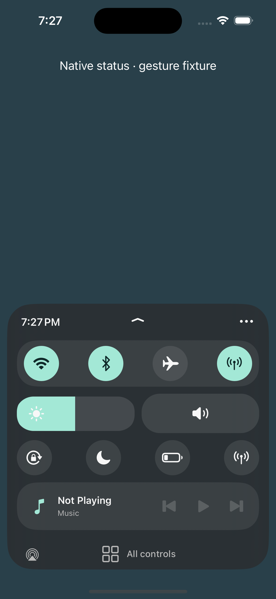

Harbor
A little room to breathe.
Beta 2 — device validation pending
Physical-device testing is pending. This is a development build, not a release-ready or compatibility-certified tweak. It has compiled for arm64/arm64e and passed policy, package integration, and simulator/mock-host checks. Those checks do not prove that its private Control Center hooks work on your phone.
Targets iOS 17.0 in a RootHide environment with working SpringBoard injection, a compatible injection runtime, and PreferenceLoader. TrollStore alone is not sufficient. No support for iOS 17.1 or later is claimed.
Fixed in beta 2
Corrects the activation and Settings registration defects in beta 1. Adds a timestamped SpringBoard status report in Settings to explain why Harbor has kept Apple's controls visible.
After updating, restart SpringBoard through Bootstrap's supported UI and reopen Settings. Enable Settings injection if your environment requires it for PreferenceLoader. Settings → Harbor → Enable Harbor defaults on. Open Control Center with the usual downward swipe from the top-right, in portrait.
If the dashboard is absent, open Settings → Harbor → Refresh status. The report includes its build version and time; it describes the last recorded event.
Your everyday controls, together.
- Live media, artwork, and playback controls with honest empty states.
- Brightness, native volume, and AirPlay routing.
- Connections and Focus shortcuts into Apple's native panels.
- Sea Glass, Ember, and Iris palettes, with optional gentle haptics.
- Accessible labels, larger-text layouts, and reduced-motion support.

Native when you need it.
All controls restores Apple's full Control Center for the current visit. Close and reopen to return to Harbor. Connections and Focus are native-panel shortcuts, not independent radio toggles. Landscape and iPad retain the native layout.
Settings → Harbor includes a master switch. Confirm All controls and the master switch work before relying on the dashboard.
Before using it daily
SpringBoard injection, gestures, lock-screen access, hardware brightness/volume, live media, AirPlay, and interactions with other tweaks remain unverified on a physical phone.
Disable Harbor in Settings, or uninstall it through your RootHide package manager and restart SpringBoard using that environment's supported UI. If needed, use your environment's established safe-mode/disable-tweak recovery procedure.